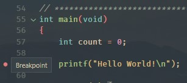
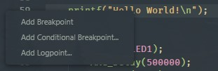

Analog Devices MSDK User Guide
- Analog Devices MSDK User Guide
- Overview
- Installation
- Getting Started
- Development Guide
- Build System
- Peripheral Driver API
- Libraries
Overview
The Maxim Microcontrollers SDK (MSDK), now a part of Analog Devices, contains the necessary software and tools to develop firmware for the MAX32xxx and MAX78xxx Microcontrollers. That includes register files and system startup files to enable low-level development for its supported parts. It also provides higher level peripheral driver APIs (written in C) alongside various utilities, third-party libraries, Board Support Packages (BSPs) and a set of example programs for each microcontroller.
Additionally, a GCC-based toolchain is included and builds are managed by a system of Makefiles (See GNU Make). Flashing and debugging are enabled by a custom fork of OpenOCD. The MSDK's toolchain and build system offers a Command Line Interface (CLI), and project files for supported development environments are maintained that build on top of that CLI.
This document describes the MSDK's installation, setup, and usage.
Supported Operating Systems
-
Windows (Windows 10 only)
-
Linux (Ubuntu only)
-
MacOS
Supported Parts
The following microcontrollers and evaluation platforms are officially supported by the MSDK.
-
MAX32520: ChipDNA Secure Microcontroller with Secure Boot for IoT Applications
-
MAX32570: Low-Power Arm Cortex-M4 Microcontroller with Contactless Radio for Secure Applications (Available by NDA only)
-
MAX32650: Ultra-Low-Power Arm Cortex-M4 with FPU-Based Microcontroller (MCU) with 3MB Flash and 1MB SRAM
-
MAX32655: Low-Power, Arm Cortex-M4 Processor with FPU-Based Microcontroller and Bluetooth 5.2
-
MAX32660: Tiny, Ultra-Low-Power Arm Cortex-M4 Processor with FPU-Based Microcontroller (MCU) with 256KB Flash and 96KB SRAM
- MAX32662 (Not Yet Publicly Available)
- MAX32662EVKIT (Not Yet Publicly Available)
-
MAX32665-MAX32668 Family: Low-Power ARM Cortex-M4 with FPU-Based Microcontroller with Bluetooth 5 for Wearables
-
MAX32666FTHR2 (Product Page Not Yet Available)
-
MAX32670: High-Reliability, Ultra-Low-Power Microcontroller Powered by Arm Cortex-M4 Processor with FPU for Industrial and IoT
-
MAX32672: High-Reliability, Tiny, Ultra-Low-Power Arm Cortex-M4F Microcontroller with 12-Bit 1MSPS ADC
-
MAX32675: Ultra-Low-Power Arm Cortex-M4F with Precision Analog Front-End for Industrial and Medical Sensors
-
MAX32675FTHR (Product Page Not Yet Available)
-
MAX32680: Ultra-Low-Power Arm Cortex-M4F with Precision Analog Front-End and Bluetooth LE 5.2
- MAX32690 (Not Yet Publicly Available)
- MAX32690EVKIT (Not Yet Publicly Available)
-
MAX78000: Artificial Intelligence Microcontroller with Ultra-Low-Power Convolutional Neural Network Accelerator
-
MAX78002: Artificial Intelligence Microcontroller with Low-Power Convolutional Neural Network Accelerator
Supported Development Environments
- Visual Studio Code
- Eclipse
- IAR
- Keil
-
Command-line Development
Supported Languages
- C
- Assembly (ARM and/or RISC-V instruction set depending on microcontroller)
Installation
Prerequisites
- Administrator rights
- (On MacOS) - Homebrew
Download
The MSDK installer is available for supported Operating Systems via the links below.
-
-
This file must be made executable before it can be run (
chmod +x MaximMicrosSDK_linux.run). Alternatively, set `Allow executing as program” in the Ubuntu GUI.
-
-
- On MacOS the installer is distributed inside of a .dmg disk image file. Double click the downloaded file to mount it. Afterwards, the installer executable will be made available inside the mounted drive.
Setup
-
Download the installer executable to an accessible location and launch it.
-
Click Next to proceed from the Welcome screen.
-
Choose the installation location. By default, the MSDK will install to the
MaximSDKfolder off of the root of your filesystem. It's recommended to install to the default location.
-
Select the components to install. It's recommended to install all components.

-
Continue to the installation page, and click install to begin. Installation can be safely cancelled at any time.


-
Click Finish to complete the installation.

-
You should now see the contents of the installation directory populated with the MSDK.
Note: On MacOS, some additional steps are required.
Completing the Installation on MacOS
On MacOS, some additional missing packages must be manually installed via Homebrew.
For non-M1 platforms:
-
Follow the instructions on the Homebrew home page to install Homebrew on your system.
-
Then, open a terminal and run the command...
brew install libusb-compat libftdi hidapi libusb
For M1 platforms:
The MSDK's OpenOCD binaries ship pre-compiled for Intel Silicon (i386). As a result, you should use a Rosetta terminal on M1 platforms to install the i386 version of Homebrew and retrieve OpenOCD's dependencies with it. This ensures OpenOCD gets the packages with the architecture it needs. From there, Rosetta will handle the rest and allow running the binaries on the M1 platform's arm64 architecture.
The i386 version of Homebrew can be installed in parallel with the arm64 version, and typically installs into a separate filesystem.
-
Open a terminal and update Rosetta.
softwareupdate --install-rosetta --agree-to-license -
Close the terminal.
-
Run a new terminal in Rosetta:
-
Go to Finder > Applications and find your Terminal
-
Right-Click Terminal and Duplicate it. Rename it to "Terminal i386".
-
Rich-Click "Terminal i386" > Get Info > Enable "Open using Rosetta"
-
Launch the new "Terminal i386" and type
archto verify that it saysi386now.
-
-
From your Rosetta terminal follow the instructions on the Homebrew home page to install Homebrew on your system.
-
Verify the correct version of Homebrew is running from your Rosetta terminal using the
which brewcommand. This should return a path beginning with/usr/local.Note: On systems with multiple or pre-existing Homebrew installations, the arm64 version of Homebrew may still take precendence over the newly installed x86_64 version. If
which brewcontains/opt/homebrewinstead, you may need to edit your terminal profile's startup script. Alternatively, you can run the correct Homebrew binary directly using its absolute path. -
Run the command...
brew install libusb-compat libftdi hidapi libusb(or, if you need to use the absolute path)
/usr/local/homebrew/bin/brew install libusb-compat libftdi hidapi libusb
Maintenance
An MSDK installation contains a MaintenanceTool executable program in the root directory. This program can be used to retrieve updates, manage components, and uninstall the MSDK.

Updates
MSDK updates are typically released on a quarterly basis, and the Maintenance Tool will retrieve the latest release when Update components is run.
Development Resources
Development copies of the MSDK resources can be obtained via Github, and instructions on how to work from the development repository can be found in the repository's README.
Older Versions and Offline Installer
Older versions of the MSDK are available as an offline installer for each release tag. They are available on the Releases page of the MSDK Github and can be used to roll back to a specific MSDK release.
Getting Started
The MSDK is designed for both evaluation and end-application development. The typical evaluation cycle usually involves setting up the development environment, running demos, and exercising the peripheral driver API on an evaluation platform. The typical development cycle typically involves building a prototype application on an evaluation platform first, then porting the application to a custom board. This section describes how to get started with the MSDK focusing on the evaluation cycle.
First, review the Key Concepts below. Then, proceed to the section for your preferred IDE. Each of these sub-sections is written as a self-contained quick-start with links to additional documentation on important topics.
- Getting Started with Visual Studio Code
- Getting Started with Eclipse
- Getting Started with Command-Line Development
Key Concepts
The MSDK offers support for multiple development environments to support the user's preference. Regardless of which is used, there are a few key concepts to keep in mind.
-
Target Microcontroller: The target microcontroller refers to the base part number of the microcontroller being used for development. The MSDK contains register-level support and startup files for each of its supported parts, and it's important to note that support files for a target microcontroller and its Board Support Packages are distinct from each other.
For example, if the MAX78000EVKIT or MAX78000FTHR is being used, the Target Microcontroller is the MAX78000.
-
Board Support Package (BSP): The MSDK supports evaluation platforms for target microcontrollers via Board Support Packages. For microcontrollers with multiple evaluation platforms, multiple BSPs are available. These can be found in the
Libraries/Boardsfolder of the MSDK installation.By default, most projects in the MSDK come pre-configured for the "EVKIT"-type BSP, which is generally the largest "traditional" evaluation platform for that device. It's important to note that the active BSP may need to be reconfigured for a project, and this is done slightly differently for each development environment. This is covered in more detail below.
-
System Environment: Your system's environment is a broad term that encapsulates the programs and variables that are available to your system's shell on the command-line. It's expected that the user has some basic familiarity with this concept.
-
System Path: Your system's Path is a special environment variable that tells it where to search for program binaries. It's also expected that the user has some familiarity with this concept, and how to modify the system Path if necessary.
-
Build Configuration vs Project Configuration: An MSDK project is primarily made up of two complementary systems: The Build System and the Project Management System. These systems each offer their own configuration interfaces, and it's important to note what each is used for.
The Build System manages the compilation of source code into program binaries and offers a Command-Line Interface (CLI) for setting Build Configuration Variables.
The Project Management System offers a higher level user interface (typically with a GUI) to manage the tools for editing source code, flashing program binaries, and debugging them on hardware. The Project Management System sits on top of the build system's CLI and uses it to manage fundamental aspects of the build such as:
- Setting the Target Microcontroller
- Setting the Board Support Package
- Configuring the Environment and System Path for use with the MSDK toolchain
-
Integrated Development Environment (IDE): An IDE combines the Build System and Project Management systems and typically features a Graphical User Interface (GUI) and other development features. The abbreviation is used frequently in the document.
Getting Started with Visual Studio Code
The MSDK includes Visual Studio Code (“VS Code”) support via the VSCode-Maxim project.
This section walks through setup, opening, and running an example project with VS Code. This material is also available in video form targeting the MAX78000 in "Understanding Artificial Intelligence Episode 8.5 - Visual Studio Code". For full documentation, see the Visual Studio Code section of this User Guide.
Setup (VS Code)
The setup below only needs to be done once per MSDK installation.
-
Download & install Visual Studio Code for your OS here.
-
Launch Visual Studio Code.
-
Install the Microsoft C/C++ extension.
-
Use
CTRL + SHIFT + P(orCOMMAND + SHIFT + Pon MacOS) to open the developer prompt. -
Type "open settings json" and select the "Preferences: Open Settings (JSON)" option.

-
Add the entries below into your user settings.json file.
// There may be other settings up here... "MAXIM_PATH":"C:/MaximSDK", // Set this to the installed location of the MaximSDK. Only use forward slashes '/' when setting this path! "update.mode": "manual", "extensions.autoUpdate": false, // There may be other settings down here... -
Save your changes to the file with
CTRL + Sand restart VS Code.
Opening Example Projects
Visual Studio Code is built around a "working directory" paradigm. The editor is always rooted in a working directory, and the main mechanism for changing that directory is File -> Open Folder...

As a result, you'll notice that there is no "New Project" mechanism. A "project" in VS Code is simply a folder. It will look inside of the opened folder for a .vscode sub-folder to load project-specific settings from.

(Note: You may need to enable viewing of hidden items in your file explorer to see the .vscode sub-folder).
To open a project:
-
Launch Visual Studio Code.
-
Select File -> Open Folder...
-
Navigate to an example project for the target microcontroller in the MSDK's Examples folder and open it with Select Folder.
-
VS Code will prompt for trust the first time. Select Trust folder and enable all features

-
The opened project should look something like this.

-
Set the Board Support Package to match your evaluation platform. In VS Code, this is done by editing the
.vscode/settings.jsonfile and setting the"board"project configuration option.See Board Support Packages for more details.

-
Save your changes to
settings.jsonwithCTRL+S. -
Reload the VS Code window. A reload is necessary after changing any options in
settings.jsonto force it to re-index its Intellisense engine.VS Code can be conveniently re-loaded with the Reload Window developer command accessed with
CTRL + SHIFT + P(orCOMMAND + SHIFT + Pon MacOS).
Building and Running a Project
Once a project is opened 4 available build tasks will become available via Terminal > Run Build task... or the shortcut Ctrl+Shift+B. These are the primary interface to the build system.

-
Run the "build" task to compile the project for the configured Target Microcontroller and BSP. Notice the
TARGETandBOARDBuild Configuration Variables being set on the command-line, and the program binary successfully compiled into the.elfprogram binary in the build sub-folder of the project.
-
Connect a debug adapter between the host PC and the evaluation platform. For more detailed instructions on this hardware setup refer to the evaluation platforms Datasheet and Quick-Start Guide.
-
Run the
flashbuild task. Running this task will automatically build the project if needed, flash the program binary, and halt the program execution to await a debugger connection.
-
Open the Run and Debug window (
CTRL+SHIFT+D) and launch the debugger (F5).
-
Verify the program counter enters
mainsuccessfully.
-
Press Continue (
F5) to run the program.
Continue | Step Over | Step Into | Step Out | Restart | Stop -
Exercise the debugger, and press stop to disconnect when finished.
Getting Started with Eclipse
The only setup required to use Eclipse is to ensure that the “Eclipse” component has been selected during the MSDK installation. If the MSDK is already installed the Eclipse can be retrieved using the Maintenance Tool.
This section is an Eclipse "quick-start" that walks through creating, building, and running a project. For full documentation, see the Eclipse section of this User Guide.
Creating a New Project
-
Launch Eclipse.
-
Ensure that the Eclipse is set to the C/C++ perspective in the top right corner. Otherwise, the new project wizard will not show up.
-
Navigate to File -> New -> Maxim Microcontrollers.

-
Enter the project name and hit Next.

-
Follow the new project wizard.
- Chip type selects the Target Microcontroller
- Board type selects the Board Support Package (BSP)
- Example type selects the example project to be copied as the template for the new project.
- Adapter type selects the debug adapter to use.

-
Select Finish to create the new project.
Importing Examples
-
Launch Eclipse.
-
Use File -> Import to open the import wizard.
-
Select General -> Existing Projects into Workspace and hit Next.

-
Browse to the
Examplesfolder in the MSDK installation for your target microcontroller and select the example projects to import into the workspace.
-
Ensure that Copy projects into workspace is selected. This will copy the projects out of the MSDK, and leave the originals unmodified.
-
Select Finish to import the project(s).
-
The projects should now show up in the Project Explorer.

Building and Running Examples
-
Ensure that the Eclipse is set to the C/C++ perspective (top right).
-
Select the correct project in the Launch Configuration dropdown and ensure it's set to Debug mode.
-
Use the Build hammer button (top left) to build the project.

-
Use the Debug button (top left) to flash the program binary and connect the debugger.

-
The Eclipse view will switch to debug mode, and the debugger will break on entry into main.

-
Resume the program (
F8) using the top control bar and exercise the debugger.
-
Terminate the debugger (
CTRL+F2) when finished.
Getting Started with Command-Line Development
This section demonstrates how to build MSDK example projects for on the command line. It also demonstrates how to flash and debug over the command-line. The MAX78002EVKIT will be used as an example, but the same concepts apply to all parts.
For more detailed documentation, see the Command-Line Development section of this User Guide.
Setup (Command-Line)
Windows
On Windows, the MinGW shortcut should be used to launch a MSYS2/MinGW terminal. Alternatively, the Tools/MSYS2/msys.bat file can be launched directly.

Linux/MacOS
-
On Linux and MacOS, copy the following contents into your shell's terminal profile/startup script. Depending on your system and shell this could be
~/.profile,~/.zprofile,~/.bashrc,~/.zshrc, etc.# Set MAXIM_PATH to point to the MSDK export MAXIM_PATH=#changeme! # Add Arm Embedded GCC to path (v10.3) export ARM_GCC_ROOT=$MAXIM_PATH/Tools/GNUTools/10.3 export PATH=$ARM_GCC_ROOT/bin:$PATH # Add xPack RISC-V GCC to path (v10.2) export XPACK_GCC_ROOT=$MAXIM_PATH/Tools/xPack/riscv-none-embed-gcc/10.2.0-1.2 export PATH=$XPACK_GCC_ROOT/bin:$PATH # Add OpenOCD to path export OPENOCD_ROOT=$MAXIM_PATH/Tools/OpenOCD export PATH=$OPENOCD_ROOT:$PATH -
Change
export MAXIM_PATH=#changeme!to the installation location of the MSDK. This will make the toolchain accessible from the command-line by adding it to your system's path.# Set MAXIM_PATH environment variable export MAXIM_PATH=$HOME/MaximSDK
Verification
The following commands can be used to verify that the toolchain is accessible. They should display version numbers successfully.
arm-none-eabi-gcc -varm-none-eabi-gdb -vmake -vopenocd -v
Building and Running an Example
-
First, copy an example project to an accessible directory outside of the SDK. It is strongly recommended to keep the MSDK examples unmodified in case they need to be referenced again later.
-
Launch your terminal. On Windows, use the MinGW shortcut or
Tools/MSYS2/msys.batfile to launch the MSYS2 terminal. -
cdinto the location of the copied example project. -
Run the following command to build the example:
make -r -j-ris an option that improves build speed.-jenables parallel execution of the build in the maximum number of threads.
Expected output:
Loaded project.mk CC main.c CC /home/msdk/Libraries/Boards/MAX78002/EvKit_V1/Source/board.c CC /home/msdk/Libraries/Boards/MAX78002/EvKit_V1/../../../MiscDrivers/stdio.c CC /home/msdk/Libraries/Boards/MAX78002/EvKit_V1/../../../MiscDrivers/LED/led.c CC /home/msdk/Libraries/Boards/MAX78002/EvKit_V1/../../../MiscDrivers/PushButton/pb.c CC /home/msdk/Libraries/Boards/MAX78002/EvKit_V1/../../../MiscDrivers/Display/adafruit_3315_tft.c CC /home/msdk/Libraries/Boards/MAX78002/EvKit_V1/../../../MiscDrivers/Touchscreen/adafruit_3315_touch.c CC /home/msdk/Libraries/Boards/MAX78002/EvKit_V1/../../../MiscDrivers/Camera/camera.c CC /home/msdk/Libraries/Boards/MAX78002/EvKit_V1/../../../MiscDrivers/Camera/mipi_camera.c CC /home/msdk/Libraries/Boards/MAX78002/EvKit_V1/../../../MiscDrivers/Camera/ov7692.c CC /home/msdk/Libraries/Boards/MAX78002/EvKit_V1/../../../MiscDrivers/Camera/sccb.c AS /home/msdk/Libraries/CMSIS/Device/Maxim/MAX78002/Source/GCC/startup_max78002.S CC /home/msdk/Libraries/CMSIS/Device/Maxim/MAX78002/Source/heap.c CC /home/msdk/Libraries/CMSIS/Device/Maxim/MAX78002/Source/system_max78002.c LD /home/msdk/Examples/MAX78002/Hello_World/build/max78002.elf arm-none-eabi-size --format=berkeley /home/msdk/Examples/MAX78002/Hello_World/build/max78002.elf text data bss dec hex filename 35708 2504 1156 39368 99c8 /home/msdk/Examples/MAX78002/Hello_World/build/max78002.elf -
Connect a debug adapter between the host PC and the evaluation platform. For more detailed instructions on this hardware setup refer to the evaluation platforms Datasheet and Quick-Start Guide.
-
Run the command below to launch an OpenOCD server, flash the program binary, and halt the program execution.
openocd -s $MAXIM_PATH/Tools/OpenOCD/scripts -f interface/cmsis-dap.cfg -f target/max78002.cfg -c "program build/max78002.elf verify; init; reset halt"Expected output:
Open On-Chip Debugger 0.11.0+dev-g4cdaa275b (2022-03-02-09:57) Licensed under GNU GPL v2 For bug reports, read http://openocd.org/doc/doxygen/bugs.html DEPRECATED! use 'adapter driver' not 'interface' Info : CMSIS-DAP: SWD supported Info : CMSIS-DAP: Atomic commands supported Info : CMSIS-DAP: Test domain timer supported Info : CMSIS-DAP: FW Version = 0256 Info : CMSIS-DAP: Serial# = 044417016af50c6500000000000000000000000097969906 Info : CMSIS-DAP: Interface Initialised (SWD) Info : SWCLK/TCK = 1 SWDIO/TMS = 1 TDI = 0 TDO = 0 nTRST = 0 nRESET = 1 Info : CMSIS-DAP: Interface ready Info : clock speed 2000 kHz Info : SWD DPIDR 0x2ba01477 Info : max32xxx.cpu: Cortex-M4 r0p1 processor detected Info : max32xxx.cpu: target has 6 breakpoints, 4 watchpoints Info : starting gdb server for max32xxx.cpu on 3333 Info : Listening on port 3333 for gdb connections Info : SWD DPIDR 0x2ba01477 target halted due to debug-request, current mode: Thread xPSR: 0x81000000 pc: 0x0000fff4 msp: 0x20003ff0 ** Programming Started ** ** Programming Finished ** ** Verify Started ** ** Verified OK ** Info : Listening on port 6666 for tcl connections Info : Listening on port 4444 for telnet connections # Note: OpenOCD is now waiting for a GDB client -
Launch a new separate terminal. On Windows, use the MinGW shortcut or
Tools/MSYS2/msys.batfile to launch the MSYS2 terminal. -
cdinto the location of the copied example project. -
Run the following command to launch a GDB client.
arm-none-eabi-gdb --se=build/max78002.elf--sesets the symbol and executable file to the compiled program file. By default, the output filename matches the target microcontroller.
Expected output:
GNU gdb (GNU Arm Embedded Toolchain 10.3-2021.10) 10.2.90.20210621-git Copyright (C) 2021 Free Software Foundation, Inc. License GPLv3+: GNU GPL version 3 or later <http://gnu.org/licenses/gpl.html> This is free software: you are free to change and redistribute it. There is NO WARRANTY, to the extent permitted by law. Type "show copying" and "show warranty" for details. This GDB was configured as "--host=i686-w64-mingw32 --target=arm-none-eabi". Type "show configuration" for configuration details. For bug reporting instructions, please see: <https://www.gnu.org/software/gdb/bugs/>. Find the GDB manual and other documentation resources online at: <http://www.gnu.org/software/gdb/documentation/>. For help, type "help". Type "apropos word" to search for commands related to "word"... Reading symbols from build/max78002.elf... (gdb) -
Connect the GDB Client to the OpenOCD server with the following command.
target extended-remote localhost:3333Expected output:
Remote debugging using localhost:3333 0x0000fff4 in ?? () # Note: ?? may be present at this stage, which is OK. -
Reset the target microcontroller.
monitor reset haltExpected output:
SWD DPIDR 0x2ba01477 target halted due to debug-request, current mode: Thread xPSR: 0x81000000 pc: 0x0000fff4 msp: 0x20003ff0 -
Set a breakpoint on main.
b mainExpected output:
Breakpoint 1 at 0x10000224: file main.c, line 62. Note: automatically using hardware breakpoints for read-only addresses. -
Continue the debugger.
continueExpected output (for the Hello World example):
Continuing. Breakpoint 1, main () at main.c:62 62 printf("Hello World!\n"); -
(Optional) Continue exercising the debugger.
Run
helpfor GDB help, or see Common GDB Commands. -
Quit GDB.
quitExpected output:
A debugging session is active. Inferior 1 [Remote target] will be detached. Quit anyway? (y or n) [answered Y; input not from terminal] Detaching from program: C:\Users\User\codespace\Hello_World\build\max78002.elf, Remote target [Inferior 1 (Remote target) detached] -
In the terminal window running the OpenOCD server, press
CTRL + Cto issue the shutdown command and quit.
Development Guide
As discussed in Key Concepts, an MSDK project is primarily made up of two distinct systems: The Build System and the Project Management System. Getting Started demonstrates the basic usage and configuration of these systems, while this section offers a more detailed reference.
MSDK development primarily involves using the Project Management System, which offers a higher level user interface (typically with a GUI) that manages the tools for editing source code, flashing program binaries, and debugging for the MSDK's supported IDEs. Additionally, the Project Management System sits on top of the Build System's CLI, allowing it to manage fundamental build variables aspects of development such as:
- Setting the Target Microcontroller (
TARGETBuild Configuration Variable) - Setting the Board Support Package (
BOARDBuild Configuration Variable) - Configuring the Environment and System Path for use with the MSDK toolchain (
MAXIM_PATHBuild Configuration Variable)
Board Support Packages
The role of a Board Support Package (BSP) is to provide a hardware abstraction layer for board-level initialization code such as initializing and assigning UART instances, pushbuttons, LEDs, external peripheral devices, TFT displays, and other board-specific hardware. The MSDK's available Board Support Packages (BSPs) can be found in the Libraries/Boards folder for each Target Microcontroller.

The name of the BSP is the name of the folder. For example, the MAX78000 supports the Aud01_RevA, EvKit_V1, FTHR_RevA, and MAXREFDES178 BSPs. However, it is not always clear how these BSP names match the part numbers for different evaluation kits. The table below can be used to match an external part number with an MSDK BSP.
| External Part Number | BOARD |
|---|---|
| MAX32520-KIT | EvKit_V1 |
| MAX32520FTHR | MAX32520FTHR |
| MAX32650-EVKIT | EvKit_V1 |
| MAX32650FTHR | FTHR_APPS_A |
| MAX32655EVKIT | EvKit_V1 |
| MAX32655FTHR | FTHR_Apps_P1 |
| MAX32660-EVSYS | EvKit_V1 |
| MAX32662EVKIT | EvKit_V1 |
| MAX32666EVKIT | EvKit_V1 |
| MAX32666FTHR | FTHR |
| MAX32666FTHR2 | FTHR2 |
| MAX32670EVKIT | EvKit_V1 |
| MAX32672EVKIT | EvKit_V1 |
| MAX32672FTHR | FTHR |
| MAX32675EVKIT | EvKit_V1 |
| MAX32675FTHR | FTHR_Apps_B |
| MAX32680EVKIT | EvKit_V1 |
| MAX32690EVKIT | EvKit_V1 |
| MAX78000EVKIT | EvKit_V1 |
| MAX78000FTHR | FTHR_RevA |
| MAXREFDES178 | MAXREFDES178 |
| MAX78002EVKIT | EvKit_V1 |
To set the BSP for a project:
- In VS Code: How to Set the BSP (VS Code)
- In Eclipse: How to Set the BSP (Eclipse)
- Command-Line Development: How to Set the BSP (Command-Line)
Visual Studio Code
Support for Visual Studio Code is maintained for the MSDK and developed on the VSCode-Maxim Github repository. This section augments the VSCode-Maxim README with more detailed usage info and insight.
Setup (VS Code)
The setup below only needs to be done once per MSDK installation.
-
Download & install Visual Studio Code for your OS here.
-
Launch Visual Studio Code.
-
Install the Microsoft C/C++ extension.
-
Use
CTRL + SHIFT + P(orCOMMAND + SHIFT + Pon MacOS) to open the developer prompt. -
Type "open settings json" and select the "Preferences: Open Settings (JSON)" option (not "Preferences: Open Default Settings (JSON)"). This will open your user settings.json file in VS Code's editor.
-
Add the entries below into your user settings.json file.
{ // There may be other settings up here... "MAXIM_PATH":"C:/MaximSDK", // Set this to the installed location of the MaximSDK. Only use forward slashes '/' when setting this path! "update.mode": "manual", "extensions.autoUpdate": false, // There may be other settings down here... } -
Save your changes to the file with
CTRL + Sand restart VS Code.
Opening Example Projects
Visual Studio Code is built around a "working directory" paradigm. The editor is always rooted in a working directory, and the main mechanism for changing that directory is File -> Open Folder...
As a result, you'll notice that there is no "New Project" mechanism. A "project" in VS Code is simply a folder. It will look inside of the opened folder for a .vscode sub-folder to load project-specific settings from.
(Note: You may need to enable viewing of hidden items in your file explorer to see the .vscode sub-folder).
To open a project:
-
Launch Visual Studio Code.
-
Select File -> Open Folder...
-
Navigate to an example project for the target microcontroller in the MSDK's Examples folder and open it with Select Folder.
-
VS Code will prompt for trust the first time. Select Trust folder and enable all features.
-
The opened project should look something like this.
-
(Optional) Set the Board Support Package to match your evaluation platform if necessary. Projects default to the "EVKIT" BSP for the target microcontroller. See How to Set the BSP (VS Code) below.
How to Set the BSP (VS Code)
To set the BSP for a project:
-
Set the
"board"project configuration option in.vscode/settings.json, which maps to theBOARDBuild Configuration Variable.See Board Support Packages for a table of possible values.
-
Reload the VS Code window to re-index its Intellisense engine.
VS Code can be conveniently re-loaded with the Reload Window developer command accessed with
CTRL + SHIFT + P(orCOMMAND + SHIFT + Pon MacOS).
Building a Project
Once a project is opened 4 available build tasks will become available via Terminal > Run Build task... or the shortcut Ctrl+Shift+B.
Run the "build" task to compile the project for the configured Target Microcontroller and BSP. Notice the TARGET, BOARD , and PROJECT Build Configuration Variables being set on the command-line, and the program binary successfully compiled into the .elf program binary in the build sub-folder of the project.
To clean a project, run the clean build task. This will wipe the contents of the build folder entirely. Additionally, the clean-periph task can be used to clean the project and the peripheral drivers.
Flashing and Debugging
This section assumes a debugger is connected between the host PC and the evaluation platform. For more detailed instructions on this hardware setup refer to the evaluation platforms Datasheet and Quick-Start Guide, which are available on the evaluation platform's product page.
Arm Core Debugging
-
Run the
flashbuild task. Running this task will automatically build the project if needed, flash the program binary, and halt the program execution to await a debugger connection.Flashing does not happen automatically when launching the debugger. This is an intentional design choice for VS Code to allow the debugger to quickly restart the program under debug without a lengthy re-flash procedure.
-
Open the Run and Debug window (
CTRL+SHIFT+D) and launch the debugger (F5). Use the Arm M4 profile. -
Verify the program counter enters
mainsuccessfully. -
Press Continue (
F5) to run the program. The debugger control bar can be used to exercise the debugger further.Continue | Step Over | Step Into | Step Out | Restart | Stop
Breakpoints
Breakpoints can be set by clicking next to a line number in VS Code's editor. They are removed by clicking on them again.

Additionally conditional breakpoints can be added by right-clicking on a line.

The condition and condition type can be modified with the dropdown. This is useful for setting breakpoint on a certain value in a for loop iterator or when a specific bit in a register is set, for example.

Peripheral Browsing
A peripheral browser lets you quickly view the formatted register-level contents of the peripheral blocks on a target microcontroller under debug. Currently, VSCode-Maxim does not feature a true peripheral browser. Instead, watch expressions can be used to inspect peripherals at the register level.

Watch expressions can be set for all registers. (For example, the sysctrl register below).

- Adding
,blets you print out the value in binary - Adding
,xprints the value in hex. - Standard logical and bitwise operations are supported inside the watch expression.
- Register and variable values can be modified through these same watch-points. (Right click -> Set Value)
It should be noted that the debugger's watch-points are contextual, meaning that its symbol look-ups will depend on the active point in your program.
Dual Core Debugging
For microcontrollers with both an Arm M4 and a RISC-V core, the GDB (RISC-V) launch profile is provided to enable RISC-V debugging. The RISC-V core requires setup and handoff from the Arm M4 core. As a result, this is an advanced configuration requiring a unique combination of the project's source code, Makefiles, and VSCode-Maxim project settings. Such projects are appended with the -riscv suffix in the project's folder name.
This section demonstrates how to debug -riscv projects in VS Code using the mnist-riscv project for the MAX78000 as an example.
-
Connect both your Arm (SWD) and RISC-V (JTAG) debuggers. VSCode-Maxim projects come pre-configured to use the ARM-USB-OCD-H + ARM-JTAG-20-10 adapters for the RISC-V JTAG port. Ex:

-
Make sure your Olimex debugger drivers are installed correctly. Sometimes they need to be updated using the "zadig" tool. See Section 3.3.3 of the Olimex User Manual, and use the Zadig tool to install WinUSB drivers.
-
Download the max78000_riscv.cfg file and place it inside the
Tools/OpenOCD/scripts/targetfolder of your MSDKinstallation. -
Open the project in VS Code.
-
Run the "Flash" task.

-
Launch the debugger using the GDB (Arm M4) profile first:

... which should hit the breakpoint in
main.c...
-
Continue the debugger. The code in
main.cwill boot up the RISC-V core. You can optionally set a breakpoint onWakeISRto see when the RISC-V core has signaled it's ready.
-
Now, switch the debugger profile to the GDB (RISC-V) profile and launch it. This will launch an additional instance on a separate port and connect to the Olimex adapter.

The "Signal 0" exception below is a known issue caused by a reset bug on the RISC-V core. The exception message is harmless and can be safely ignored.

-
From here, the debugger should be fully functional. The Arm vs RISC-V debugger instance can be selected with the dropdown on the debugger control bar.

Eclipse
Running Eclipse
Eclipse must be launched via the Eclipse MaximSDK shortcut which points to the Tools/Eclipse/cdt/eclipse(.bat/.sh) file. This file can be used directly to launch Eclipse as well. It callssetenv(.bat/.sh) script in the root directory of the MSDK to properly configure Eclipse's system environment for use with the toolchain.
When Eclipse is launched, it will prompt for a workspace location. This is a local folder that Eclipse will copy its projects into.

Creating a New Project
-
Launch Eclipse.
-
Ensure that the Eclipse is set to the C/C++ perspective in the top right corner. Otherwise, the new project wizard will not show up.
-
Navigate to File -> New -> Maxim Microcontrollers.
-
Enter the project name and hit Next.
-
Follow the new project wizard.
- Chip type selects the Target Microcontroller
- Board type selects the Board Support Package (BSP)
- Example type selects the example project to be copied as the template for the new project.
- Adapter type selects the debug adapter to use.
-
Select Finish to create the new project.
Importing Examples
-
Launch Eclipse.
-
Use File -> Import to open the import wizard.
-
Select General -> Existing Projects into Workspace and hit Next.
-
Browse to the
Examplesfolder in the MSDK installation for your target microcontroller and select the example projects to import into the workspace. -
Ensure that Copy projects into workspace is selected. This will copy the projects out of the MSDK, and leave the originals unmodified.
-
Select Finish to import the project(s).
-
The projects should now show up in the Project Explorer.
How to Set the BSP (Eclipse)
Imported Eclipse projects files are configured for the EVKIT-type BSP by default. To set the BSP:
- Open (right click) the project properties and navigate to C/C++ Build -> Environment.
-
Set the
BOARDBuild Configuration Variable to match the target evaluation platform.See Board Support Packages for a table of possible values.

-
clean and rebuild the project.
Building a Project
-
Ensure that the Eclipse is set to the C/C++ perspective (top right).
-
Select the correct project in the Launch Configuration dropdown.
-
Use the Build hammer button (top left) to build the project.
Flashing and Debugging
-
Connect a debug adapter between the host PC and the evaluation platform. For more detailed instructions on this hardware setup refer to the evaluation platforms Datasheet and Quick-Start Guide.
-
Ensure the correct project in the Launch Configuration dropdown is selected in Debug mode.
-
Use the Debug button (top left) to flash the program binary and connect the debugger.
-
The Eclipse view will switch to debug mode, and the debugger will break on entry into main.
-
Resume the program (
F8) using the top control bar and exercise the debugger. -
Terminate the debugger (
CTRL+F2) when finished.
Command-Line Development
Setup (Command-Line)
Windows
On Windows, the MinGW shortcut should be used to launch a MSYS2/MinGW terminal. Alternatively, the Tools/MSYS2/msys.bat file can be launched directly.
Linux/MacOS
-
On Linux and MacOS, copy the following contents into your shell's terminal profile/startup script. Depending on your system and shell this could be
~/.profile,~/.zprofile,~/.bashrc,~/.zshrc, etc.# Set MAXIM_PATH to point to the MSDK export MAXIM_PATH=#changeme! # Add Arm Embedded GCC to path (v10.3) export ARM_GCC_ROOT=$MAXIM_PATH/Tools/GNUTools/10.3 export PATH=$ARM_GCC_ROOT/bin:$PATH # Add xPack RISC-V GCC to path (v10.2) export XPACK_GCC_ROOT=$MAXIM_PATH/Tools/xPack/riscv-none-embed-gcc/10.2.0-1.2 export PATH=$XPACK_GCC_ROOT/bin:$PATH # Add OpenOCD to path export OPENOCD_ROOT=$MAXIM_PATH/Tools/OpenOCD export PATH=$OPENOCD_ROOT:$PATH -
Change
export MAXIM_PATH=#changeme!to the installation location of the MSDK. This will make the toolchain accessible from the command-line by adding it to your system's path.# Set MAXIM_PATH environment variable export MAXIM_PATH=$HOME/MaximSDK
Verification
The following commands can be used to verify that the toolchain is accessible. They should display version numbers successfully.
arm-none-eabi-gcc -varm-none-eabi-gdb -vmake -vopenocd -v
How to Set the BSP (Command-Line)
-
Set the
BOARDBuild Configuration Variable in project.mk# This file can be used to set build configuration # variables. These variables are defined in a file called # "Makefile" that is located next to this one. # For instructions on how to use this system, see # https://github.com/Analog-Devices-MSDK/VSCode-Maxim/tree/develop#build-configuration # ********************************************************** # Add your config here! BOARD=FTHR_RevA # Set the BSP -
Alternatively, set
BOARDon the command-line when building (ie.make -r -j BOARD=FTHR_RevA)
Building on the Command-Line
-
cdinto the project folder. -
Run
make -
Parallel Build (fastest build, but console message formatting may be mangled):
make -r -j -
Serial Build
make -r -
Take note of the output filename and location, which by default is the lowercase name of the Target microcontroller and created in the
buildfolder.
Cleaning on the Command-Line
cdinto the project folder.- Run
make clean - Project clean:
make cleandeletes the projectbuildfolder and all of its contents. - Library clean:
make distcleancan be used to clean out all build products, including the projectbuildfolder and all peripheral driver libraries.
Flashing on the Command-Line
-
Build the project.
-
Connect a debug adapter between the host PC and the evaluation platform. For more detailed instructions on this hardware setup refer to the evaluation platforms Datasheet and Quick-Start Guide.
-
Flash the program using
openocd.-
Flash and exit: Use this command if you just want to flash the program but not debug. OpenOCD will flash the program and exit on completion.
openocd -s $MAXIM_PATH/Tools/OpenOCD/scripts -f interface/cmsis-dap.cfg -f target/max78002.cfg -c "program build/max78002.elf verify exit"-f target/max78002.cfgsets the OpenOCD config file for the Target microcontroller. Supported options can be found in the Tools/OpenOCD/scripts/target folder. Change this to match the target microcontroller.-c "program build/max78002.elf verify exit"flashes the program binary. Changebuild/max78002.elfto match the correct filename.
Expected output:
Open On-Chip Debugger 0.11.0+dev-g4cdaa275b (2022-03-02-09:57) Licensed under GNU GPL v2 For bug reports, read http://openocd.org/doc/doxygen/bugs.html DEPRECATED! use 'adapter driver' not 'interface' Info : CMSIS-DAP: SWD supported Info : CMSIS-DAP: Atomic commands supported Info : CMSIS-DAP: Test domain timer supported Info : CMSIS-DAP: FW Version = 0256 Info : CMSIS-DAP: Serial# = 044417016af50c6500000000000000000000000097969906 Info : CMSIS-DAP: Interface Initialised (SWD) Info : SWCLK/TCK = 1 SWDIO/TMS = 1 TDI = 0 TDO = 0 nTRST = 0 nRESET = 1 Info : CMSIS-DAP: Interface ready Info : clock speed 2000 kHz Info : SWD DPIDR 0x2ba01477 Info : max32xxx.cpu: Cortex-M4 r0p1 processor detected Info : max32xxx.cpu: target has 6 breakpoints, 4 watchpoints Info : starting gdb server for max32xxx.cpu on 3333 Info : Listening on port 3333 for gdb connections Info : SWD DPIDR 0x2ba01477 target halted due to debug-request, current mode: Thread xPSR: 0x81000000 pc: 0x0000fff4 msp: 0x20003ff0 ** Programming Started ** ** Programming Finished ** ** Verify Started ** ** Verified OK ** shutdown command invoked -
Flash and hold: Use this if you want to also debug the program. OpenOCD will flash the program, reset the MAX78002, halt program execution, and wait for a GDB debugger client connection.
openocd -s $MAXIM_PATH/Tools/OpenOCD/scripts -f interface/cmsis-dap.cfg -f target/max78002.cfg -c "program build/max78002.elf verify; init; reset halt"-f target/max78002.cfgsets the OpenOCD config file for the Target microcontroller. Supported options can be found in the Tools/OpenOCD/scripts/target folder. Change this to match the target microcontroller.-c "program build/max78002.elf verify exit"flashes the program binary. Changebuild/max78002.elfto match the correct filename.
Expected output:
Open On-Chip Debugger 0.11.0+dev-g4cdaa275b (2022-03-02-09:57) Licensed under GNU GPL v2 For bug reports, read http://openocd.org/doc/doxygen/bugs.html DEPRECATED! use 'adapter driver' not 'interface' Info : CMSIS-DAP: SWD supported Info : CMSIS-DAP: Atomic commands supported Info : CMSIS-DAP: Test domain timer supported Info : CMSIS-DAP: FW Version = 0256 Info : CMSIS-DAP: Serial# = 044417016af50c6500000000000000000000000097969906 Info : CMSIS-DAP: Interface Initialised (SWD) Info : SWCLK/TCK = 1 SWDIO/TMS = 1 TDI = 0 TDO = 0 nTRST = 0 nRESET = 1 Info : CMSIS-DAP: Interface ready Info : clock speed 2000 kHz Info : SWD DPIDR 0x2ba01477 Info : max32xxx.cpu: Cortex-M4 r0p1 processor detected Info : max32xxx.cpu: target has 6 breakpoints, 4 watchpoints Info : starting gdb server for max32xxx.cpu on 3333 Info : Listening on port 3333 for gdb connections Info : SWD DPIDR 0x2ba01477 target halted due to debug-request, current mode: Thread xPSR: 0x81000000 pc: 0x0000fff4 msp: 0x20003ff0 ** Programming Started ** ** Programming Finished ** ** Verify Started ** ** Verified OK ** Info : Listening on port 6666 for tcl connections Info : Listening on port 4444 for telnet connections # Note: OpenOCD is now waiting for a GDB client connection
-
Debugging on the Command-Line
-
Flash the program using the Flash and Hold command.
-
Launch an new separate terminal. On Windows, use the MinGW shortcut or
Tools/MSYS2/msys.batfile to launch the MSYS2 terminal. -
cdinto the location of the copied example project. -
Run the following command to launch a GDB client.
arm-none-eabi-gdb --se=build/max78002.elf--sesets the symbol and executable file to the compiled program file. Change this to match the build output filename.
Expected output:
GNU gdb (GNU Arm Embedded Toolchain 10.3-2021.10) 10.2.90.20210621-git Copyright (C) 2021 Free Software Foundation, Inc. License GPLv3+: GNU GPL version 3 or later <http://gnu.org/licenses/gpl.html> This is free software: you are free to change and redistribute it. There is NO WARRANTY, to the extent permitted by law. Type "show copying" and "show warranty" for details. This GDB was configured as "--host=i686-w64-mingw32 --target=arm-none-eabi". Type "show configuration" for configuration details. For bug reporting instructions, please see: <https://www.gnu.org/software/gdb/bugs/>. Find the GDB manual and other documentation resources online at: <http://www.gnu.org/software/gdb/documentation/>. For help, type "help". Type "apropos word" to search for commands related to "word"... Reading symbols from build/max78002.elf... (gdb) -
Connect the GDB Client to the OpenOCD server with the following command.
target extended-remote localhost:3333Expected output:
Remote debugging using localhost:3333 0x0000fff4 in ?? () # Note: ?? may be present at this stage, which is OK. -
Reset the target microcontroller.
monitor reset haltExpected output:
SWD DPIDR 0x2ba01477 target halted due to debug-request, current mode: Thread xPSR: 0x81000000 pc: 0x0000fff4 msp: 0x20003ff0 -
Set a breakpoint on main.
b mainExpected output:
Breakpoint 1 at 0x10000224: file main.c, line 62. Note: automatically using hardware breakpoints for read-only addresses. -
Continue the debugger.
continueExpected output (for the Hello World example):
Continuing. Breakpoint 1, main () at main.c:62 62 printf("Hello World!\n"); -
(Optional) Continue exercising the debugger.
Run help for GDB help, or see Common GDB Commands.
-
Quit GDB.
quitExpected output:
A debugging session is active. Inferior 1 [Remote target] will be detached. Quit anyway? (y or n) [answered Y; input not from terminal] Detaching from program: C:\Users\User\codespace\Hello_World\build\max78002.elf, Remote target [Inferior 1 (Remote target) detached] -
Quit OpenOCD. In the terminal window running the OpenOCD server, press
CTRL + Cto issue the shutdown command.
Common GDB Commands
| Command | Short Command | Description |
|---|---|---|
monitor halt |
Halt the microcontroller. | |
monitor reset halt |
Reset the microcontroller and immediately halt. | |
monitor max32xxx mass_erase 0 |
Mass erase the flash. | |
file <filename> |
Set the program file to <filename> |
|
load |
Flash the current program file | |
continue |
c |
Continue execution. |
break <arg> |
b <arg> |
Set a breakpoint. <arg> can be a function name, file:line_number, or address. |
print <variable> |
p |
Print the value of a variable. Variable must be in current scope. |
backtrace |
bt |
Print contents of the stack frame. |
step |
s |
Execute the next instruction. |
next |
n |
Execute the next line of code. |
finish |
f |
Continue to the end of the current function. |
info reg |
Print the values of the ARM registers. | |
help |
Print descriptions for available commands | |
help <cmd> |
Print description for given command. | |
quit |
q |
Quit the GDB client |
Build System
As discussed in Key Concepts, an MSDK project is primarily made up of two distinct systems: The Build System and the Project Management System. Getting Started demonstrates the basic usage and configuration of these systems, while this section offers a detailed reference into the build system's CLI and additional documentation on advanced options and use-cases.
Build System Overview
The Build System manages the compilation of source code into program binaries and offers a Command-Line Interface (CLI) for setting Build Configuration Variables.
The Build System is managed by two files found in a project's root directory, one called Makefile and one called project.mk. These files are used alongside the GNU Make program (which is a part of the MSDK toolchain) to locate and build a project's source code.
- Makefile is the "core" file, and should not be edited directly. Instead, it exposes the CLI that can be accessed in the project.mk file, on the command-line, in your system's environment, or via your IDE. It also comes with a default configuration that is suitable for most projects.
- project.mk offers a convenient and stable access point for advanced build configuration, and this is the file that should be edited if necessary.
When the command...
make
... is run from inside of a project folder, the program make will resolve any project-specific settings and then build the project's source code.
Default Build Behavior
By default, when make is run the build system will auto-search the root project directory for source code (*.c) and header files (*.h) to compile into a program binary. The optional include and src directories are also searched if they exist.
Root Project Directory
├─ project.mk
├─ Makefile
├─ *.h
├─ *.c
├─include # <-- Optional
└─ *.h
├─src # <-- Optional
└─ *.c
Additionally, a project's build system will come pre-configured for a specific Target Microcontroller and its primary BSP.
The default configuration is suitable for most use-cases, but a system of Build Configuration Variables are available if additional configuration is needed for a project.
Build Configuration Variables
A Build Configuration Variable is a Makefile variable, and therefore follows the same rules. However, they have been streamlined to be made much easier to use, so most of the official GNU Make documentation is only needed for extremely advanced use-cases.
How to Set a Build Configuration Variable
To set a standard configuration variable, use the = syntax...
VARIABLE=VALUE
The = operater is used for most configuration variables with a few exceptions (documented in the reference table) when a variable should contain a list of values. In such cases, use += the syntax to add values to the list.
VARIABLE+=VALUE1
VARIABLE+=VALUE2
Where to Set a Build Configuration Variable
For most variables, you should set them in the project.mk file (exceptions are documented in the reference table and IDE-specific sections).
For example, to enable hardware floating-point acceleration for a project, the MFLOAT_ABI configuration variable can be used with a value of hard. The contents of project.mk might then look as follows:
(Inside project.mk)
# This file can be used to set build configuration
# variables. These variables are defined in a file called
# "Makefile" that is located next to this one.
# For instructions on how to use this system, see
# https://github.com/Analog-Devices-MSDK/VSCode-Maxim/tree/develop#build-configuration
# **********************************************************
MFLOAT_ABI=hard # Enable hardware floating point acceleration
It should also be noted that configuration variables can be set on the command-line as well. For example...
make MFLOAT_ABI=hard
... will have the same effect.
Additionally, environment variables can be used. For example (on linux)...
export MFLOAT_ABI=hard
... will set the hardware floating point acceleration as the default for all projects with an environment variable.
However, there is a precedence hierarchy that should be taken into consideration.
Precedence Hierarchy
The precedence hierarchy for the value of a configuration variable is:
- IDE/command-line > project.mk > environment variable > default value
...meaning if a value is set in an IDE and project.mk, the IDE's value will take precedence. However, the "override" directive can be used in project.mk to give it max precedence.
Build Configuration Variables Reference Table
| Configuration Variable | Description | Details |
|---|---|---|
TARGET |
Set the Target Microcontroller | If you are using an IDE, set this variable in the IDE's settings instead of project.mk |
BOARD |
Set the Board Support Package (BSP) | If you are using an IDE, set this variable in the IDE's settings instead of project.mk. See Board Support Packages for more details. When you change this option, it's usually a good idea to fully clean your project, then re-build. |
MAXIM_PATH |
(Optional) Specify the location of the MSDK | This optional variable can be used to change where the Makefile looks for the MSDK installation. By default, the build system will attempt to locate the MSDK with a relative path. If a project is moved outside of the SDK this variable must be set to the absolute path of the MSDK installation. |
CAMERA |
(Optional) Set the Camera drivers to use | This option is only useful for the MAX78000 and MAX78002, and sets the camera drivers to use for the project. Permitted values are HM01B0, HM0360_MONO, HM0360_COLOR, OV5642, OV7692 (default), or PAG7920. Camera drivers can be found in the Libraries/MiscDrivers/Camera folder. Depending on the selected camera, a compiler definition may be added to the build. See the board.mk file for the active BSP for more details. |
VPATH |
Where to search for source (.c) files | Use the += operator with this variable. This controls where the Makefile will look for source code files. If AUTOSEARCH is enabled (which it is by default) this controls which paths will be searched. If AUTOSEARCH is disabled, this tells the Makefile where to look for the files specified by SRCS. |
IPATH |
Where to search for header (.h) files | Use the += operator with this variable. This controls where the Makefile will look for header files. Unlike the VPATH option, this is not related to AUTOSEARCH. Individual header files are not ever manually added into the build. Instead, you only need to specify the location of your header files. |
AUTOSEARCH |
Automatically search for source (.c) files | Enable or disable the automatic detection of .c files on VPATH (enabled by default). Set to 0 to disable, or 1 to enable. If auto-search is disabled, source files must be manually added to SRCS. |
SRCS |
List of source (.c) files to add to the build | Use the += operator with this variable. All of the files in this list will be added to the build. If AUTOSEARCH is enabled, this is most useful for adding the full absolute path to a singular source file to selectively add to the build. If AUTOSEARCH is disabled, all of the source files for the project must be added to SRCS, and they must also all be located on an entry in VPATH. Otherwise, a full path relative to the Makefile must be used. |
PROJECT |
Set the output filename | This controls the output filename of the build. File extensions should not be included in the filename. For VS Code, you should use the project_name advanced config option instead of project.mk. |
MXC_OPTIMIZE_CFLAGS |
Set the optimization level | See Optimize Options for more details. Normal builds will default to -Og, which is good for debugging, while release builds will default to -O2. |
PROJ_CFLAGS |
Add a compiler flag to the build | Use the += operator with this variable. Compiler flags can be added with this option, including compiler definitions. For each value, the same syntax should be used as if the compiler flag was passed in via the command-line. These can include standard GCC options and/or ARM-specific options. |
PROJ_AFLAGS |
Add an assembler flag to the build | Use the += operator with this variable. Assembler flags can be added with this option. |
MFLOAT_ABI |
Set the floating point acceleration level | Sets the floating-point acceleration level. Permitted values are hard, soft, softfp (default). To enable full hardware acceleration instructions use hard, but keep in mind that all libraries your source code uses must also be compiled with hard. If there is any conflict, you'll get a linker error. For more details, see -mfloat-abi under ARM Options. |
LINKERFILE |
Set the linkerfile to use | Set the linkerfile with this option. The file should exists in Libraries/CMSIS/Device/Maxim/TARGET/Source/GCC in the MSDK, or it should be placed inside the root directory of the project. |
PROJ_LDFLAGS |
Add a linker flag to the build | Use the += operator with this variable. Flags can be passed to the linker with this option. See GCC Options for Linking |
LIB_BOARD |
Include the BSP library (enabled by default) | Inclusion of the Board-Support Package (BSP) library, which is enabled by default, can be toggled with this variable. Set to 0 to disable, or 1 to enable. |
LIB_PERIPHDRIVERS |
Include the peripheral driver library (enabled by default) | The peripheral driver library can be toggled with this option. If disabled, you'll lose access to the higher-level driver functions but still have access to the register-level files. Set to 0 to disable, or 1 to enable. |
LIB_CMSIS_DSP |
Include the CMSIS-DSP library | The CMSIS-DSP library can be enabled with this option. Set to 0 to disable, or 1 to enable. |
LIB_CORDIO |
Include the Cordio library | The Cordio BLE library can be included with this option. This is only applicable towards microcontrollers with an integrated BLE controller. |
LIB_FCL |
Include the Free Cryptographic Library (FCL) | This option toggles the Free Cryptographic Library (FCL), which is a collection of software-implemented common cryptographic functions can be included with this option. Set to 0 to disable, or 1 to enable. |
LIB_FREERTOS |
Include the FreeRTOS library | The FreeRTOS library can be enabled with this option, which is an open-source Real-Time Operating System (RTOS). Set to 0 to disable, or 1 to enable. |
LIB_LC3 |
Include the LC3 codec library | This option enables the inclusion of the Low Complexity Communication Codec (LC3), which is an efficient low latency audio codec. Set to 0 to disable, or 1 to enable. |
LIB_LITTLEFS |
Include the littleFS library | This option toggles the "Little File System" library - a small filesystem library designed for microcontrollers. Set to 0 to disable, or 1 to enable. |
LIB_LWIP |
Include the lwIP library | |
LIB_MAXUSB |
Include the MaxUSB library | This option toggles the inclusion of the MAXUSB library, which facilitates the use of the native USB peripherals on some microcontrollers. Set to 0 to disable, or 1 to enable. |
LIB_SDHC |
Include the SDHC library | This options toggles the Secure Digital High Capacity (SDHC) library, which can be used to interface with SD cards. Additionally, it enables the FatFS library, which implements a generic FAT filesystem. |
SBT |
Toggle SBT integration | Toggles integration with the Secure Boot Tools (SBTs). These are a suite of applications designed for use with microcontrollers that have secure bootloaders. When this is enabled, some additional rules become available such as make sla and make scpa. Set to 0 to disable or 1 to enable. |
MAXIM_SBT_DIR |
Where to find the SBTs | This option can be used to manually specify the location of the SBTs. Usually, this is not necessary. By default, the Tools/SBT directory of the MaximSDK will be searched. If the SBT installer is used, it will set the MAXIM_SBT_DIR environment variable to point to itself automatically. |
TARGET_SEC |
Secure part number to use | Some secure microcontrollers have multiple secure variants, and this option can be used to specify the variant to use with the SBTs. Defaults are intelligently selected, and can be found in $(MAXIM_SBT_DIR)/SBT-config.mk |
SCP_PACKETS |
Where to build the scp_packets folder | Defaults to build/scp_packets |
TEST_KEY |
Which test key to sign applications with | Defaults to $(MAXIM_SBT_DIR)/devices/$(TARGET_SEC)/keys/maximtestcrk.key, which is the Maxim test key that can be used for development. |
Peripheral Driver API
Overview
A microcontroller is made up of a Central Processing Unit (CPU) that is surrounded by additional peripheral hardware blocks such as timers, memory controllers, UART controllers, ADCs, RTCs, audio interfaces, and many more. The Peripheral Driver API is an important core library in the MSDK that allows the CPU to utilize the microcontroller's hardware blocks over a higher-level Application Programming Interface (API).

A detailed API reference can be found in the Documentation folder of the MSDK installation for each microcontroller. This documentation is auto-generated with DoxyGen from the API's source code, and is organized into modules matching each of the available hardware peripherals. The MSDK will contain at minimum one example per module demonstrating its usage.
Organization
The Peripheral Driver API's source code is organized as follows:
- Header files (.h) can be found in the
Libraries/PeriphDrivers/Includefolder.- These files contain function declarations for the API, describing the function prototypes and their associated documentation.
- Source files (.c) can be found in the
Libraries/PeriphDrivers/Sourcefolder.- These file contain the function definitions for the API - the implementations of the functions declared by the header files.
The implementation files are further organized based on die type and hardware revision. This is worthy to note when browsing or debugging through the drivers.
- The die type files follow the
_MEXXor_AIXXnaming convention- These file's responsibility is to manage microcontroller-specific implementation details that may interact with other peripheral APIs before ultimately calling the revision-specific files.
- The _hardware revision_ files follow the
_revXnaming convention.- These files contain the pure driver implementation for a peripheral block, and typically interact with the hardware almost entirely at the register level.
API Reference Manuals
A full Peripheral Driver API reference manual is available for each microcontroller below.
Libraries
The MSDK contains a large number of libraries, both third-party and in-house. These libraries are an extension to the "core" SDK resources and contain drivers for miscellaneous external components such as TFT displays, cameras, accelerometers, audio codecs, and other devices. The MSDK also contains libraries for more advanced internal hardware peripherals that provide an additional higher-level abstraction layer above the Peripheral Driver API such as USB, the SDHC interface, and the Cordio BLE stack.
These libraries may also offer their own Build Configuration Variables in addition to those already available in the Build System. These additional build options are enabled alongside the library itself via a convenient toggle switch (See the "Libraries" section of the Build Configuration Variables).
Source code is located in the Libraries folder of the SDK and managed with the Libraries/libs.mk file, which comes pre-included in each example project.
CMSIS-DSP
The CMSIS-DSP library provides a suite of common Digital Signal Processing (DSP) functions that take advantage of hardware accelerated Floating Point Unit (FPU) available on microcontrollers with Arm Cortex-M cores. This library is distributed in the MSDK as a pre-compiled static library file and the MSDK maintains a port of the official code examples in the ARM-DSP Examples folder for each microcontroller.
Please refer to the CMSIS-DSP official documentation for more detailed documentation on the library functions and usage.
CMSIS-DSP Supported Parts
- All microcontrollers with a Cortex M4 core are supported.
Cordio Bluetooth Low Energy
The Cordio Bluetooth Low Energy (BLE) library provides a full BLE stack for microcontrollers with an integrated BLE controller.
Cordio Supported Parts
- MAX32655
- MAX32665
- MAX32680
- MAX32690
MAXUSB
The MAXUSB library provides a higher-level interface for utilizing the built-in USB controller hardware available on some microcontrollers. This allows the microcontroller to enumerate as a USB device without the need for an external USB controller IC.
MAXUSB Supported Parts
- MAX32570
- MAX32650
- MAX32655 & MAX32656
- MAX32665-MAX32668
- MAX32690
- MAX78002
Miscellaneous Drivers
The Libraries/MiscDrivers folder of the MSDK contains drivers for miscellaneous external components such as TFT displays, cameras, audio codecs, PMICs, pushbuttons, etc. These resources are usually closely tied with the Board Support Packages.
SDHC
The Secure Digital High Capacity (SDHC) library offers a higher-level interface built on top of the SDHC Peripheral Driver API that includes a FatFS File System implementation for managing files on SD cards.
SDHC Supported Parts
- MAX32650
- MAX32570
- MAX32665-MAX32668
- MAX78002